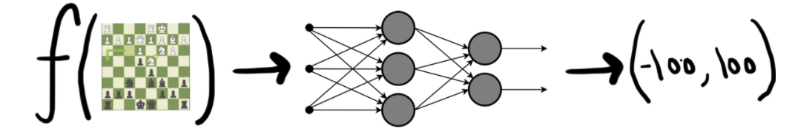
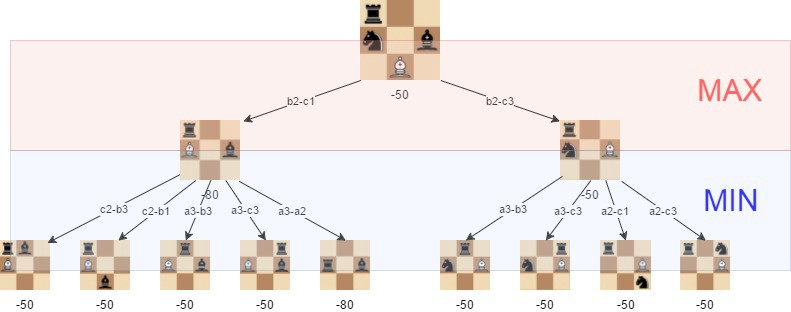

Project Description:
I will focus on creating a chess engine - an AI chess player that consists of two key parts:
- Evaluation function: this function, given the state of a game of chess, returns an integer between -100 and 100, corresponding to the strength of either side's board state. We will have 100 represent a checkmate for white (end of the game and a win for white) while -100 represents a checkmate for black (the game is over and black has won). A perfect problem for a neural network! By training on a large dataset of openly available chess positions (and calculating closeness to checkmate), we can train a NN that simulates an evaluation function by (hopefully) accurateley predicting the strength of a given chess position. 
- Search algorithm: once we have a working evaluation function, we can, starting with the opening position of a chess game, create a tree of *all* possible moves to be made, each labeled with an evaluation. Given this tree, we use a search algorithm (mini-max or monte-carlo) to search for the optimal line of play for the computer in order to maximize its evaluation. Note: The number of possible chess positions after 4 moves (this means each side has played four moves) is 656,100,000,000. Thus, to minimize the time complexity of creating such a tree, we will need to use severl "pruning" methods by eliminating "bad" nodes wherever we can. 
Project Goals:
- Train a NN to simulate an evaluation function for a given chess board-state
- Implement a (semi-)efficient search algorithm to suggest optimal lines of play. stretch:
- Push the engine to its limits! How strong of a chess player can we make it?
- Implement a playable chess interface to allow users to interact with our engine